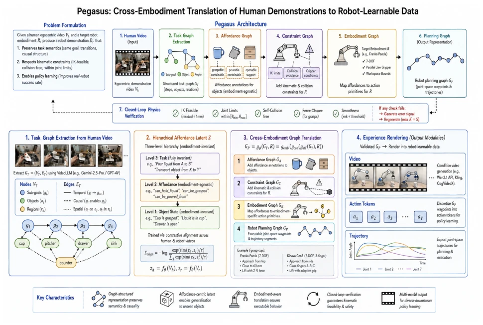
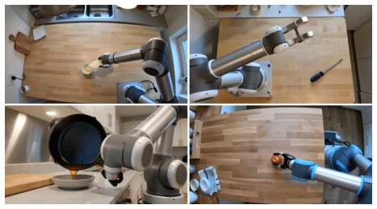

The name Pegasus is quite ambitious, attempting to feed robots with human videos, essentially data alchemy. It does not learn pixels directly, but decomposes videos into graphs, then converts them into plans understandable by robots. This approach is more pragmatic than simple video generation, since robots do not care if the video looks like the real thing, only if it can move. However, relying on VideoLLM for task decomposition is a risk; once parsed incorrectly, everything downstream is wasted. Although physical verification adds a closed loop, it only checks kinematics, while contact dynamics are sidelined. Overall, this is a good attempt at low-cost data generation, but it still lacks the maturity for generalization; do not expect it to solve all contact problems. It successfully transforms the hardware collection problem into a knowledge transfer problem, but ethical and safety statements also warn of the risks of generated data, which cannot be directly deployed on real machines.
研究动机Motivation
具身智能的核心瓶颈是数据，而非模型架构。现有真实机器人数据采集成本高昂且难以扩展 (Brohan et al. 2023; Vuong et al. 2023)。物理仿真虽数据无限，但存在 sim-to-real 差距 (Todorov et al. 2012; Aljalbout et al. 2025)。利用人类视频虽数据量大，但现有方法多学习视觉表征而非可执行轨迹 (Nair et al. 2022; Ma et al. 2023)。核心挑战在于具身鸿沟：人类与机器人形态、运动学不同，导致演示无法直接迁移。现有视频生成工作如 UniPi (Du et al. 2023) 未解决跨具身转移问题，且以视觉保真度为指标而非策略提升。因此，需要一种结构化经验转移机制，将人类意图转化为机器人可执行的约束满足问题，而非像素匹配。
The core bottleneck of embodied intelligence is data, not model architecture. Existing real robot data collection is costly and difficult to scale (Brohan et al. 2023; Vuong et al. 2023). Although physical simulation offers infinite data, there exists a sim-to-real gap (Todorov et al. 2012; Aljalbout et al. 2025). Utilizing human videos provides large data volumes, but existing methods mostly learn visual representations rather than executable trajectories (Nair et al. 2022; Ma et al. 2023). The core challenge lies in the embodied gap: differences in morphology and kinematics between humans and robots lead to demonstrations that cannot be directly transferred. Existing video generation works such as UniPi (Du et al. 2023) do not solve the cross-embodied transfer problem, and use visual fidelity as a metric rather than policy improvement. Therefore, a structured experience transfer mechanism is needed to transform human intent into robot-executable constraint satisfaction problems, rather than pixel matching.
The Pegasus framework includes five stages: video -> task graph -> hierarchical affordance latent space -> robot planning graph -> verification -> rendering. First, extract a task graph (Task Graph) from human videos, where nodes contain subgoals, objects, and spatial regions, and edges encode temporal, causal, and spatial relationships. The core innovation is the Hierarchical Affordance Latent, moving from object states to operational capabilities to task semantics, achieving cross-embodied invariance. Next, convert the task graph into a robot planning graph via graph operators, containing Affordance Graph, Constraint Graph, and Planning Graph, handling operational capabilities, kinematic constraints, and executable trajectories respectively. Finally, iteratively correct via a Closed-loop Physics Verifier, ensuring inverse kinematics feasibility and no collisions. Finally rendered into video, action, or trajectory data. This design defines embodied transfer as graph reasoning rather than appearance generation, decoupling semantic reasoning and embodied adaptation, allowing the same task graph to be instantiated on different robot platforms.

Figure 1: Pegasus Architecture. Human demonstrations are transformed into task graphs, encoded in a hierarchical affordance latent space, translated into embodiment-specific robot planning graphs, verified against physical constraints, and rendered as robot-learning experiences.
Evaluated on GTEA Gaze+, EPIC-KITCHENS-100, and internet video datasets, involving 5 types of robots including Franka, xArm, etc. Metrics include Task Correctness (TC), Executability (EX), State Consistency (SC), and Learnability (LE). Results show that graph-conditioned generation improves TC by 12.3% and EX by 15.7% compared to prompt-based generation. Downstream policy learning (OpenVLA, ACT) indicates that using only generated data achieves 55.2% success rate, approaching 50 real data samples. Closed-loop verification improves the executable trajectory pass rate from 51.2% to 94.1%. Ablation studies prove the Constraint Graph is most critical for executability, while Affordance Latent contributes most to generalization on unseen objects, e.g., significant improvement in task correctness for unseen objects like watermelons.

Figure 2: Multi-scene synthesized robot videos generated from human manipulation videos. The equally sized pan- els illustrate diverse manipulation tasks, environments, and viewpoints.